Databases
Description:
- Create SQL database using SSMS
- Create stored procedures for queries used in original project
- Create stored procedures to return hashed password for user verification
- Create methods to perform CRUD operations in the database
Narrative:
For databases, I chose to continue with the CS 340 project from Software Design and Engineering. I chose this project as it shows how to work with both a non-relational and, for my enhancement, a relational database. Also, for my enhancement, I wanted to add a level of security by creating a login screen and implement hashing to store user’s passwords. Along with this, I also created a basic “user role” column to determine permissions for use of CRUD operations.
This project originally used a MongoDB database. First, I learned how to work with the MongoDB database from the command line to read, write, update and delete collections in the database.
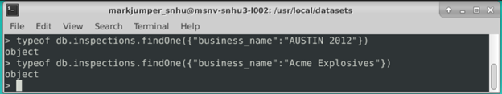 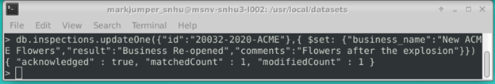 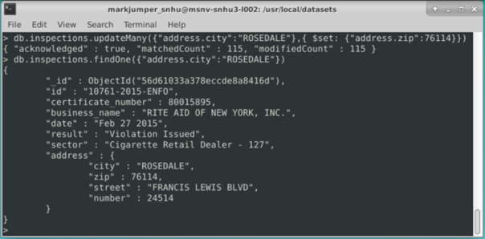For the project, I created the AnimalShelter.py using the python library called PyMongo to open a connection and implement CRUD methods to work with the database – create (lines 26-38), read (lines 45-52), update (lines 58-72), and delete (lines 76-89). This used similar syntax to the MongoDB commands, which made creating and testing the python definitions simpler. The real challenge was learning to query for specific results, which are found in the ProjectTwoDashboard.ipybn for the radio buttons.
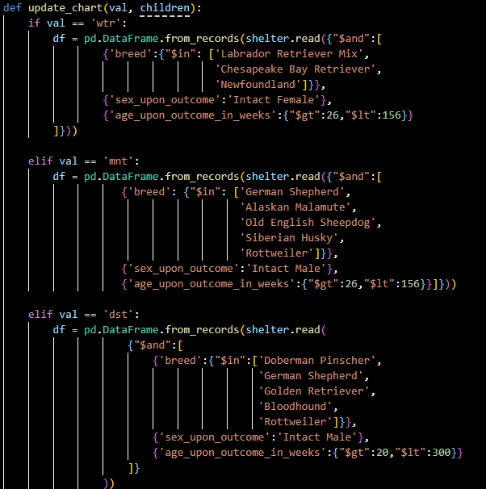For my enhancement, I chose to recreate the database and use it within a WPF (Windows Presentation Foundation) Application. To do this, I used Microsoft’s SSMS and SQL. I first had to learn how to input a .csv file to create the table. Secondly, I had to learn how to create and implement stored procedures as that is how I wanted to return the required results for the filters in the MainWindow.cs. As part of the CRUD methods in the Update.cs, I used object oriented programming to work with the textboxes to create, read, update and delete. Lastly, my final enhancement was to create a User table and implement a Login Screen to be able to perform these operations. For this, I had to learn how to use the HASHBYTE function in SQL to store the passwords and then create another stored procedure that would take the password input from the user, hash it, then return the hashed password to check against the stored password in the database as seen in the Login.cs file. For test purposes, I kept the username and password simple by using the email of the user and the password set to User123 (eg: Admin@Test.com, Admin123). To implement this into the application I used the following code, which also utilizes a LINQ query:
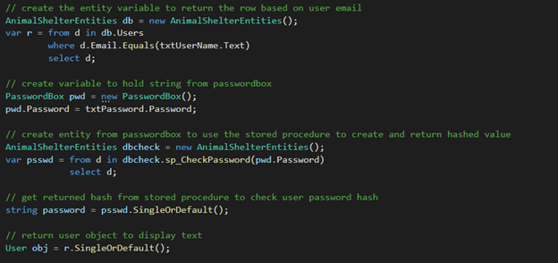The same is true for the filter buttons, for example:
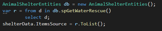Stored procedure for MianWindow.cs:
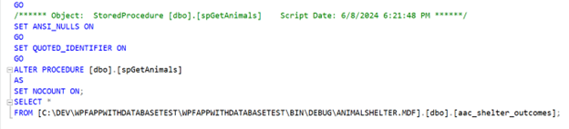Stored procedure for Individual Rescue:
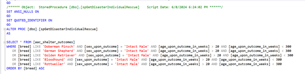Stored procedure for Mountain/Wilderness Rescue:
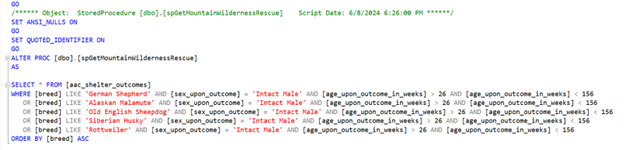Stored Procedure for Water Rescue:
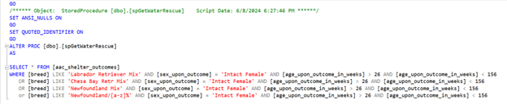Stored Procedure for Returning HASH for verifying password:
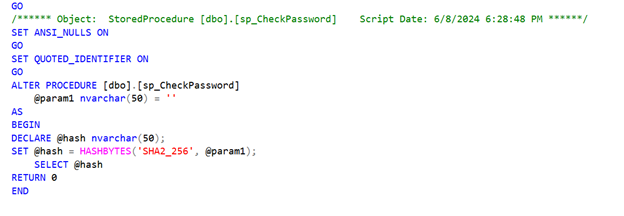